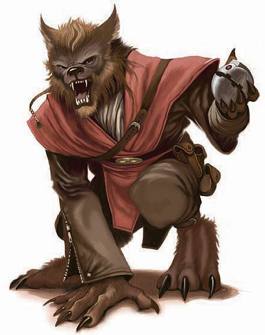

<!DOCTYPE html>
<html>

<head>
  <title>Shistavanen</title>

  <meta charset="utf-8">
  <meta name="viewport" content="width=device-width, initial-scale=1, shrink-to-fit=no">

  <link rel="stylesheet" href="https://stackpath.bootstrapcdn.com/bootstrap/4.1.3/css/bootstrap.min.css" integrity="sha384-MCw98/SFnGE8fJT3GXwEOngsV7Zt27NXFoaoApmYm81iuXoPkFOJwJ8ERdknLPMO"
    crossorigin="anonymous">
  <link rel="stylesheet" href="https://pro.fontawesome.com/releases/v5.5.0/css/all.css" integrity="sha384-j8y0ITrvFafF4EkV1mPW0BKm6dp3c+J9Fky22Man50Ofxo2wNe5pT1oZejDH9/Dt"
    crossorigin="anonymous">
  <link rel="stylesheet" type="text/css" href="style.css">
</head>

<body>

  <nav class="navbar navbar-expand-lg navbar-dark bg-dark">
    <a class="navbar-brand" href="#">Star Wars Tabletop Codex</a>
    <button class="navbar-toggler" type="button" data-toggle="collapse" data-target="#navbarSupportedContent" aria-controls="navbarSupportedContent"
      aria-expanded="false" aria-label="Toggle navigation">
      <span class="navbar-toggler-icon"></span>
    </button>

    <div class="collapse navbar-collapse" id="navbarSupportedContent">
      <ul class="navbar-nav mr-auto">
        <li class="nav-item">
          <a class="nav-link" href="index.html">Home</a>
        </li>
        <li class="nav-item active" id="nav_active">
          <a class="nav-link" href="species_index.html">Species <span class="sr-only">(current)</span></a>
        </li>
        <li class="nav-item">
          <a class="nav-link" href="equipment_index.html">Equipment</a>
        </li>
        <li class="nav-item">
          <a class="nav-link" href="class_index.html">Classes</a>
        </li>
      </ul>
    </div>
  </nav>


  <br>
  <div class="Container" id="main_box">

    <a href="species_index.html"><button type="button" class="btn btn-outline-dark" id="back_button">&#9668; Back</button></a>

    <h1>Shistavanen</h1>
    <h5 class="aurebesh_under">shistavanen</h5>

    
    <br>

    <div class="container col-8">

      <div class="card">
        <div class="card-header" id="headingOne">
          <h5 class="mb-0">
            <button class="btn btn-link btn-block" type="button" data-toggle="collapse" data-target="#collapseZero" aria-expanded="false"
              aria-controls="collapseZero" style="color: white; text-decoration: none; text-align: left">
              Stats
            </button>
          </h5>
        </div>
        <div id="collapseZero" class="collapse" aria-labelledby="headingZero">
          <div class="card-body">
            <div class="row justify-content-md-center">
              <div class="col col-lg-2 align" align="center">
                <strong>Bra</strong>
              </div>
              <div class="col col-lg-2" align="center">
                <strong>Agi</strong>
              </div>
              <div class="col col-lg-2" align="center">
                <strong>Int</strong>
              </div>
              <div class="col col-lg-2" align="center">
                <strong>Cun</strong>
              </div>
              <div class="col col-lg-2" align="center">
                <strong>Will</strong>
              </div>
              <div class="col col-lg-2" align="center">
                <strong>Pre</strong>
              </div>
            </div>
            <div class="row justify-content-md-center">
              <div class="col col-lg-2" align="center">
                2
              </div>
              <div class="col col-lg-2" align="center">
                3
              </div>
              <div class="col col-lg-2" align="center">
                3
              </div>
              <div class="col col-lg-2" align="center">
                2
              </div>
              <div class="col col-lg-2" align="center">
                1
              </div>
              <div class="col col-lg-2" align="center">
                1
              </div>
            </div>
            <br>
            <div class="row justify-content-md-center">
              <div class="col col-lg-6">
                <b>Wound Threshold: </b>12 + Brawn
              </div>
            </div>
            <div class="row justify-content-md-center">
              <div class="col col-lg-6">
                <b>Strain Threshold: </b>10 + Willpower
              </div>
            </div>
            <div class="row justify-content-md-center">
              <div class="col col-lg-6">
                <b>Starting Experience: </b>80 XP
              </div>
            </div>
            <div class="row justify-content-md-center">
              <div class="col col-lg-6">
                <p><b>Special Abilities: </b>Shistavanens begin the game with one rank in either <u>Brawl</u> or <u>Survival</u>.
                  They still may not train Brawl or Survival above rank 2 during character creation.</p>
              </div>
            </div>
            <div class="row justify-content-md-center">
              <div class="col col-lg-6">
                <p><b>Hunter's Instincts: </b>When making a check for Initiative, a Shistavanen may make a Survival check
                  instead of a Discipline or Cool check.</p>
              </div>
            </div>
          </div>
        </div>
      </div>

    </div>
    <br>
    <p>The isolationist <b>Shistavanens</b> are fur-covered bipeds with sharp teeth and claws. Across the wider galaxy, they
      are best known as hunters, whether of beasts or sentient beings, and they can operate efficiently in a wide variety
      of environments. While Shistavanens do not completely shut out the galaxy at large, they tend to be extremely dedicated
      to their own families, communities, and cultures, even as compared to most other species. At its best, this tendency
      contributes to strong communities that support their individual members among Shistavanens, but at its worst, it can
      lead to wariness of outsiders and even xenophobia. Few Shistavanens leave their home system of Uvena, but individual
      wanderers and occasional migrant communities have brought their ways and culture to other worlds in the galaxy.</p>
    <br>
    <div class="accordion" id="accordionExample">

      <div class="card">
        <div class="card-header" id="headingOne">
          <h5 class="mb-0">
            <button class="btn btn-link btn-block" type="button" data-toggle="collapse" data-target="#collapseOne" aria-expanded="false"
              aria-controls="collapseOne" style="color: white; text-decoration: none; text-align: left">
              Physiology
            </button>
          </h5>
        </div>
        <div id="collapseOne" class="collapse" aria-labelledby="headingOne">
          <div class="card-body">
            <p>Shistavanens resemble humanoids with digitigrade lower limbs. They are completely covered by short, thick
              fur that is often brown or black. They have upright, pointed ears on the upper sides of their heads, and have
              a fearsome visage when they bare their sharp teeth. Shistavanens have extremely sharp senses, especially vision,
              hearing, and smell. The Shistavanen gait alternates naturally between walking upright and on all fours, and
              they can bound through rough ground with impressive speed and stability. Shistavanens are naturally surefooted,
              giving them a further advantage when hunting or traversing terrain quickly. Their digits have large black claws,
              and they usually walk barefoot. Shistavanens range between a little over a meter to almost two meters tall.
              Few possess Force sensitivity, but the Jedi of old once counted more than one Shistavanen among their ranks.</p>
          </div>
        </div>
      </div>

      <div class="card">
        <div class="card-header" id="headingTwo">
          <h5 class="mb-0">
            <button class="btn btn-link btn-block" type="button" data-toggle="collapse" data-target="#collapseTwo" aria-expanded="false"
              aria-controls="collapseTwo" style="color: white; text-decoration: none; text-align: left">
              Society
            </button>
          </h5>
        </div>
        <div id="collapseTwo" class="collapse" aria-labelledby="headingTwo">
          <div class="card-body">
            <p>The Shistavanens are widely known to be isolationist and distrustful of outsiders, thus their species’ relationships
              with other political bodies, including the Empire, tend to be cautious and aloof. Their natural aggressiveness
              and imposing visage causes many members of other species to avoid Shistavanens, further cementing their reputation.
              The various ruling powers of the Uvena system intentionally use this behavior to actively deter outsiders from
              becoming too involved in Shistavanen business and society. Still, most species find ways to travel across the
              stars, sometimes even in spite of their inclinations, and even wary cultures have enterprising members who
              wish to learn of the wider galaxy. These beings generally serve as liaisons to offworld businesses and organizations,
              or leave their homeworld of Uvena Prime to see other worlds. Particularly driven individuals seek better fortunes
              in the galaxy at large, where many find that their natural quickness and aggressiveness make them adept at
              piloting, fighting, hunting, and in other professions that value these traits.</p>
            <p>Shistavanen home life is extremely family-centric. Traditional dwellings and settlements are carved into natural
              rock formations or constructed from baked clay bricks. Families with enough space might have several generations
              of extended family clustered around a central dwelling. Usually, the role of leader is held by the eldest family
              member, but different groups have varying traditions. Wilderness skills, such as hunting, tracking, survival,
              and fighting techniques are group activities held by all, even residents of Uvena’s cities. The ascent to adulthood
              requires a successful solo hunt in the wilderness. These skills are highly sought after by offworld entities,
              including galactic corporations, criminals, and even some branches of the Imperial intelligence services. Prying
              a suitable candidate away from Uvena is very difficult for any other than the Empire, who have the means to
              force one into service. Shistavanen mercenaries and trackers are known fortheir high fees.</p>
            <p>In other parts of the galaxy, Shistavanens are frequently regarded as loners, if they are recognized at all,
              for they are relatively rare outside the Uvena system. Some prefer jobs that allow them to operate on their
              own, such as bounty hunting or scouting, and avoid interacting with members of other species. Most Shistavanens
              do not lack pride in their species, and some feel that members of other species are inferior, mostly because
              they are not Shistavanen.</p>
            <p>This standoffishness is reinforced by Shistavanens’ appearance and frequent aggressiveness, which make them
              difficult for members of many other species to approach. On the other hand, the Shistavanen culture’s emphasis
              on family and communal bonds mean that some Shistavanens become extremely dedicated to those who get past their
              tough exterior and intimidating visage—even if those friends and confidantes happen to be members of other
              species. Even gregarious Shistavanens tend to be slow to warm up to new people, at least as compared with most
              species commonly encountered by spacers on the fringe, though they might express this aloofness as excessive
              formality or stoicism rather than as aggression if they are versed in other galactic cultures.</p>
          </div>
        </div>
      </div>

      <div class="card">
        <div class="card-header" id="headingThree">
          <h5 class="mb-0">
            <button class="btn btn-link btn-block" type="button" data-toggle="collapse" data-target="#collapseThree" aria-expanded="false"
              aria-controls="collapseThree" style="color: white; text-decoration: none; text-align: left">
              Homeworld
            </button>
          </h5>
        </div>
        <div id="collapseThree" class="collapse" aria-labelledby="headingThree">
          <div class="card-body">
            <p>Shistavanens come from <b>Uvena Prime</b>, located in the Uvena system in the Outer Rim Territories. It is
              under Imperial control, much to the outrage of the Shistavanens. Outsiders are not generally welcome on Uvena
              Prime, but traders, corporations, and powerful individuals are tolerated to better the local economy and facilitate
              the importation of much-needed goods and technology. Local trade rules and tariffs obviously favor the Shistavanen
              merchants and traders, at least as much as Imperial oversight allows.</p>
            <p>Even in such a hostile environment, some interstellar corporations still manage to make enough credits for
              the effort to be worthwhile. While insinuating one’s business into the Uvena system is a challenge, a few steadfast
              entrepreneurs have managed to make doing so extremely profitable.</p>
            <p>To ensure complete control of their home system, the Shistavanens long ago colonized every nearby planet.
              They laid claim to every rock in the Uvena system, going so far as to establish outposts on large asteroids
              and regular probe droid patrols to maintain their presence in remote locales. These efforts provide effective
              surveillance against any who seek a land grab of their own. Countless legal trade rendezvous and accidental
              encounters have run afoul of the ruling bodies of Uvena and their typically territorial sentiments.</p>
            <p>Uvena Prime itself consists of large, forested continents surrounded by vast oceans. Strong sunlight and warm
              weather allow the Shistavanens to make hard clay bricks that form the basis of much of their construction outside
              of natural caves. Cities and settlements are found from the coasts to the deep, over￾grown forests. Some settlements
              are so isolated that they are virtually self-sustaining. Imperial scouts routinely seek them out, and use regular
              (if infrequent) patrols to keep an eye on them to ensure that insurrection cannot take root in this region.</p>
          </div>
        </div>
      </div>
      <div class="card">
        <div class="card-header" id="headingFour">
          <h5 class="mb-0">
            <button class="btn btn-link btn-block" type="button" data-toggle="collapse" data-target="#collapseFour" aria-expanded="false"
              aria-controls="collapseFour" style="color: white; text-decoration: none; text-align: left">
              Language
            </button>
          </h5>
        </div>
        <div id="collapseFour" class="collapse" aria-labelledby="headingFour">
          <div class="card-body">
            <p>The Shistavanens’ native language consists of snarls, barks, and growls. It is very difficult for most other
              species to replicate with any accuracy, which suits the majority of Shistavanens just fine. Shistavanens traveling
              or living elsewhere in the galaxy usually learn Basic. Using Basic on Uvena Prime is frowned upon but grudgingly
              tolerated where needed to communicate with outsiders. More Shistavanens have learned to speak Basic since the
              establishment of the Empire, mainly to deal with Imperial governing officials and trade partners.</p>
          </div>
        </div>
      </div>
      <div class="card">
        <div class="card-header" id="headingFive">
          <h5 class="mb-0">
            <button class="btn btn-link btn-block" type="button" data-toggle="collapse" data-target="#collapseFive" aria-expanded="false"
              aria-controls="collapseFive" style="color: white; text-decoration: none; text-align: left">
              Life in the Alliance
            </button>
          </h5>
        </div>
        <div id="collapseFive" class="collapse" aria-labelledby="headingFive">
          <div class="card-body">
            <p>Like most galactic citizens, Shistavanens as a group have no singular event that pushes them to join the Rebel
              Alliance. Although their homeworld is dominated by the Empire, the Empire takes little interest in it beyond
              basic maintenance of Imperial rule. Most Shistavanens don’t like the Empire, but tolerate it in much the same
              way that they interacted with the Republic and other offworlders before. Individual Shistavanens find their
              own reasons to fight back, often due to terrible personal experiences. Once in the Alliance, Shistavanens gravitate
              toward duties that mesh well with their physical skills. Many become pilots or scouts. However, those who excel
              at martial arts bring a ferocity and violence that often lands them assignments among the Rebellion’s Spec-Forces.
              Shistavanen combatants are fearsome, effective, and resourceful fighters.</p>
          </div>
        </div>
      </div>
      <div class="card">
        <div class="card-header" id="headingSix">
          <h5 class="mb-0">
            <button class="btn btn-link btn-block" type="button" data-toggle="collapse" data-target="#collapseSix" aria-expanded="false"
              aria-controls="collapseSix" style="color: white; text-decoration: none; text-align: left">
              Prideful Allies
            </button>
          </h5>
        </div>
        <div id="collapseSix" class="collapse" aria-labelledby="headingSix">
          <div class="card-body">
            <p>The somewhat infamous Shistavanen belief in their superiority manifests in as many ways as there are individuals
              who display it. Shistavanen members of the Rebel Alliance are just as trustworthy and loyal as those of any
              other species, but their pride can sometimes cause them to have grating tendencies. Of course, this is true
              of more than a few members of most species, but it often shows up in specific ways for Shistavanens. Some ways
              their xenophobia can manifest include:</p>
            <ul>
              <li>Insistence on taking on the most difficult tasks on a mission out of the fear that others will fail.</li>
              <li>Sudden boasting about natural abilities or past successes as a means to secure a part in a mission.</li>
              <li>Hiding fear of others through threats.</li>
            </ul>
            <p>Members of the Rebel Alliance are generally a tolerant bunch, and many take issue with these sorts of tendencies
              in their comrades. Usually, even the most xenophobic of recruits puts the mission before personal pride—after
              all, the Empire is a threat to everyone—and eventually learns to tolerate or even appreciate members of other
              species and cultures. Some Shistavanen Soldiers grow to consider their squadmates a sort of family, and thus
              see them as eminently worthy of dedication and protection—though newcomers must still prove themselves before
              being welcomed into the fold.</p>
          </div>
        </div>
      </div>
    </div>

  </div>

  <script src="https://code.jquery.com/jquery-3.3.1.slim.min.js" integrity="sha384-q8i/X+965DzO0rT7abK41JStQIAqVgRVzpbzo5smXKp4YfRvH+8abtTE1Pi6jizo"
    crossorigin="anonymous"></script>
  <script src="https://cdnjs.cloudflare.com/ajax/libs/popper.js/1.14.3/umd/popper.min.js" integrity="sha384-ZMP7rVo3mIykV+2+9J3UJ46jBk0WLaUAdn689aCwoqbBJiSnjAK/l8WvCWPIPm49"
    crossorigin="anonymous"></script>
  <script src="https://stackpath.bootstrapcdn.com/bootstrap/4.1.3/js/bootstrap.min.js" integrity="sha384-ChfqqxuZUCnJSK3+MXmPNIyE6ZbWh2IMqE241rYiqJxyMiZ6OW/JmZQ5stwEULTy"
    crossorigin="anonymous"></script>

  <div class="footer_bar"></div>
</body>

</html>